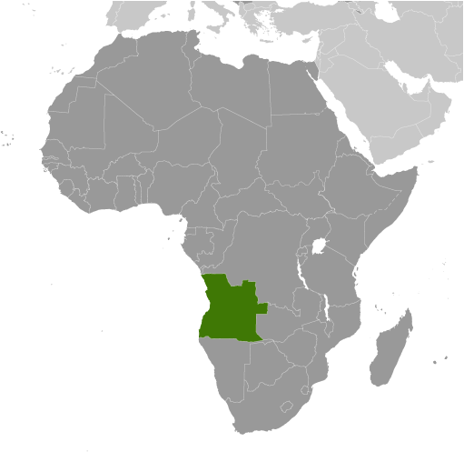
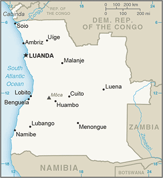
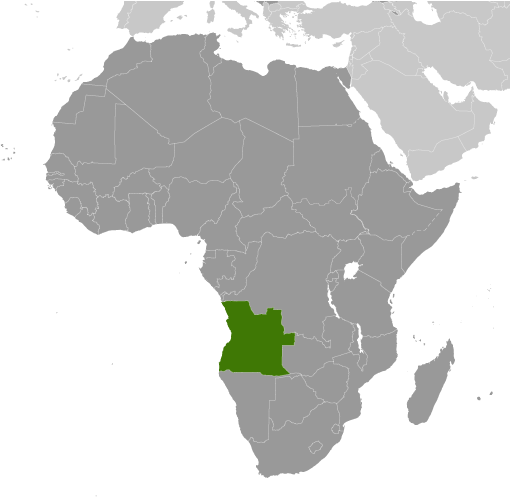
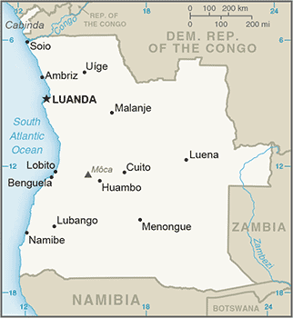

Africa :: ANGOLA
Introduction :: ANGOLA
-
Angola scores low on human development indexes despite using its large oil reserves to rebuild since the end of a 27-year civil war in 2002. Fighting between the Popular Movement for the Liberation of Angola (MPLA), led by Jose Eduardo DOS SANTOS, and the National Union for the Total Independence of Angola (UNITA), led by Jonas SAVIMBI, followed independence from Portugal in 1975. Peace seemed imminent in 1992 when Angola held national elections, but fighting picked up again in 1993. Up to 1.5 million lives may have been lost - and 4 million people displaced - during the more than a quarter century of fighting. SAVIMBI's death in 2002 ended UNITA's insurgency and cemented the MPLA's hold on power. President DOS SANTOS pushed through a new constitution in 2010 and was elected to a five year term as president in 2012.
Geography :: ANGOLA
-
Southern Africa, bordering the South Atlantic Ocean, between Namibia and Democratic Republic of the Congo12 30 S, 18 30 EAfricatotal: 1,246,700 sq kmland: 1,246,700 sq kmwater: 0 sq kmcountry comparison to the world: 24about eight times the size of Georgia; slightly less than twice the size of Texastotal: 5,369 kmborder countries (4): Democratic Republic of the Congo 2,646 km (of which 225 km is the boundary of discontiguous Cabinda Province), Republic of the Congo 231 km, Namibia 1,427 km, Zambia 1,065 km1,600 kmterritorial sea: 12 nmcontiguous zone: 24 nmexclusive economic zone: 200 nmsemiarid in south and along coast to Luanda; north has cool, dry season (May to October) and hot, rainy season (November to April)narrow coastal plain rises abruptly to vast interior plateaumean elevation: 1,112 melevation extremes: lowest point: Atlantic Ocean 0 mhighest point: Moca 2,620 mpetroleum, diamonds, iron ore, phosphates, copper, feldspar, gold, bauxite, uraniumagricultural land: 47.3%arable land 3.8%; permanent crops 0.2%; permanent pasture 43.3%forest: 46.8%other: 5.9% (2011 est.)860 sq km (2012)most people live in the western half of the country; urban areas account for the highest concentrations of people, particularly Luandalocally heavy rainfall causes periodic flooding on the plateauoveruse of pastures and subsequent soil erosion attributable to population pressures; desertification; deforestation of tropical rain forest, in response to both international demand for tropical timber and to domestic use as fuel, resulting in loss of biodiversity; soil erosion contributing to water pollution and siltation of rivers and dams; inadequate supplies of potable waterparty to: Biodiversity, Climate Change, Climate Change-Kyoto Protocol, Desertification, Law of the Sea, Marine Dumping, Ozone Layer Protection, Ship Pollutionsigned, but not ratified: none of the selected agreementsthe province of Cabinda is an exclave, separated from the rest of the country by the Democratic Republic of the Congo
People and Society :: ANGOLA
-
29,310,273note: results from Angola's 2014 national census estimate the country's population to be 25.8 million (July 2017 est.)country comparison to the world: 46noun: Angolan(s)adjective: AngolanOvimbundu 37%, Kimbundu 25%, Bakongo 13%, mestico (mixed European and native African) 2%, European 1%, other 22%Portuguese 71.2% (official), Umbundu 23%, Kikongo 8.2%, Kimbundu 7.8%, Chokwe 6.5%, Nhaneca 3.4%, Nganguela 3.1%, Fiote 2.4%, Kwanhama 2.3%, Muhumbi 2.1%, Luvale 1%, other 3.6%note: most widely spoken languages; shares sum to more than 100% because some respondents gave more than one answer on the census (2014 est.)Roman Catholic 41.1%, Protestant 38.1%, other 8.6%, none 12.3% (2014 est.)More than a decade after the end of Angola’s 27-year civil war, the country still faces a variety of socioeconomic problems, including poverty, high maternal and child mortality, and illiteracy. Despite the country’s rapid post-war economic growth based on oil production, more than 40 percent of Angolans live below the poverty line and unemployment is widespread, especially among the large young-adult population. Only about 70% of the population is literate, and the rate drops to around 60% for women. The youthful population – about 45% are under the age of 15 – is expected to continue growing rapidly with a fertility rate of more 5 children per woman and a low rate of contraceptive use. Fewer than half of women deliver their babies with the assistance of trained health care personnel, which contributes to Angola’s high maternal mortality rate.Of the estimated 550,000 Angolans who fled their homeland during its civil war, most have returned home since 2002. In 2012, the UN assessed that conditions in Angola had been stable for several years and invoked a cessation of refugee status for Angolans. Following the cessation clause, some of those still in exile returned home voluntarily through UN repatriation programs, and others integrated into host countries.0-14 years: 48.12% (male 7,005,891/female 7,097,392)15-24 years: 18.25% (male 2,593,355/female 2,756,367)25-54 years: 28.03% (male 3,921,046/female 4,293,307)55-64 years: 3.26% (male 438,268/female 517,690)65 years and over: 2.34% (male 290,247/female 396,710) (2017 est.)total dependency ratio: 97.6youth dependency ratio: 93elderly dependency ratio: 4.6potential support ratio: 21.9 (2015 est.)total: 15.9 yearsmale: 15.4 yearsfemale: 16.3 years (2017 est.)country comparison to the world: 2133.52% (2017 est.)country comparison to the world: 344.2 births/1,000 population (2017 est.)country comparison to the world: 19.2 deaths/1,000 population (2017 est.)country comparison to the world: 620.2 migrant(s)/1,000 population (2017 est.)country comparison to the world: 69most people live in the western half of the country; urban areas account for the highest concentrations of people, particularly Luandaurban population: 45.6% of total population (2017)rate of urbanization: 4.6% annual rate of change (2015-20 est.)LUANDA (capital) 5.506 million; Huambo 1.269 million (2015)at birth: 1.05 male(s)/female0-14 years: 1.04 male(s)/female15-24 years: 1.04 male(s)/female25-54 years: 1.02 male(s)/female55-64 years: 0.94 male(s)/female65 years and over: 0.86 male(s)/femaletotal population: 1.02 male(s)/female (2016 est.)19.4 yearsnote: median age at first birth among women 25-29 (2015/16 est.)477 deaths/100,000 live births (2015 est.)country comparison to the world: 23total: 67.6 deaths/1,000 live birthsmale: 73.3 deaths/1,000 live birthsfemale: 61.8 deaths/1,000 live births (2017 est.)country comparison to the world: 12total population: 60.2 yearsmale: 58.2 yearsfemale: 62.3 years (2017 est.)country comparison to the world: 2056.16 children born/woman (2017 est.)country comparison to the world: 213.7% (2015/16)3.3% of GDP (2014)country comparison to the world: 1780.14 physicians/1,000 population (2009)improved:urban: 75.4% of populationrural: 28.2% of populationtotal: 49% of populationunimproved:urban: 24.6% of populationrural: 71.8% of populationtotal: 51% of population (2015 est.)improved:urban: 88.6% of populationrural: 22.5% of populationtotal: 51.6% of populationunimproved:urban: 11.4% of populationrural: 77.5% of populationtotal: 48.4% of population (2015 est.)1.9% (2016 est.)country comparison to the world: 26280,000 (2016 est.)country comparison to the world: 2111,000 (2016 est.)country comparison to the world: 20degree of risk: very highfood or waterborne diseases: bacterial and protozoal diarrhea, hepatitis A, typhoid fevervectorborne diseases: dengue fever, malariawater contact disease: schistosomiasisanimal contact disease: rabies (2016)8.2% (2016)country comparison to the world: 15419% (2016)country comparison to the world: 453.5% of GDP (2010)country comparison to the world: 127definition: age 15 and over can read and writetotal population: 71.1%male: 82%female: 60.7% (2015 est.)total: 10 yearsmale: 13 yearsfemale: 8 years (2011)
Government :: ANGOLA
-
conventional long form: Republic of Angolaconventional short form: Angolalocal long form: Republica de Angolalocal short form: Angolaformer: People's Republic of Angolaetymology: name derived by the Portuguese from the title "ngola" held by kings of the Ndongo (Ndongo was a kingdom in what is now northern Angola)presidential republicname: Luandageographic coordinates: 8 50 S, 13 13 Etime difference: UTC+1 (6 hours ahead of Washington, DC, during Standard Time)18 provinces (provincias, singular - provincia); Bengo, Benguela, Bie, Cabinda, Cunene, Huambo, Huila, Kwando Kubango, Kwanza Norte, Kwanza Sul, Luanda, Lunda Norte, Lunda Sul, Malanje, Moxico, Namibe, Uige, Zaire11 November 1975 (from Portugal)Independence Day, 11 November (1975)history: previous 1975, 1992; latest passed by National Assembly 21 January 2010, adopted 5 February 2010amendments: proposed by the president of the republic or supported by at least one-third of the National Assembly membership; passage requires at least two-thirds majority vote of the Assembly subject to prior Constitutional Court review if requested by the president of the republiccivil legal system based on Portuguese civil law; no judicial review of legislationhas not submitted an ICJ jurisdiction declaration; non-party state to the ICCtcitizenship by birth: nocitizenship by descent only: at least one parent must be a citizen of Angoladual citizenship recognized: noresidency requirement for naturalization: 10 years18 years of age; universalchief of state: President Joao Manuel LOURENCO (since 26 September 2017); Vice President Bornito De Sousa Baltazar DIOGO (since 26 September 2017); note - the president is both chief of state and head of governmenthead of government: President Joao Manuel LOURENCO (since 26 September 2017); Vice President Bornito De Sousa Baltazar DIOGO (since 26 September 2017)cabinet: Council of Ministers appointed by the presidentelections/appointments: president indirectly elected by the National Assembly for a 5-year term (eligible for a second consecutive or discontinuous term); last held on 23 August 2017 (next to be held in 2022)election results: Joao Manuel LOURENCO (MPLA) elected president by the National Assemblydescription: unicameral National Assembly or Assembleia Nacional (220 seats; members directly elected in a single national constituency and in multi-seat constituencies by proportional representation vote; members serve 5-year terms)elections: last held on 23 August 2017 (next to be held in August 2022)election results: percent of vote by party - MPLA 61.1%, UNITA 26.7%, CASA-CE 9.5%, PRS 1.4%, FNLA .9%, other 0.5%; seats by party - MPLA 150, UNITA 51, CASA-CE 16, PRS 2, FNLA 1highest court(s): Supreme Court or Supremo Tribunal de Justica (consists of the court president, vice president, and a minimum of 16 judges); Constitutional Court or Tribunal Constitucional (consists of 11 judges)judge selection and term of office: Supreme Court judges appointed by the president upon recommendation of the Supreme Judicial Council, an 18-member body chaired by the president; judge tenure NA; Constitutional Court judges - 4 nominated by the president, 4 elected by National Assembly, 2 elected by Supreme National Council, 1 elected by competitive submission of curricula; judges serve single 7-year termssubordinate courts: provincial and municipal courtsBroad Convergence for the Salvation of Angola Electoral Coalition or CASA-CE [Abel CHIVUKUVUKU]National Front for the Liberation of Angola or FNLA; note - party has two factions; one led by Lucas NGONDA; the other by Ngola KABANGUNational Union for the Total Independence of Angola or UNITA [Isaias SAMAKUVA] (largest opposition party)Popular Movement for the Liberation of Angola or MPLA [Jose Eduardo DOS SANTOS] (ruling party in power since 1975)Social Renewal Party or PRS [Benedito DANIEL]Angolan Revolutionary Movement or ARMFront for the Liberation of the Enclave of Cabinda - Armed Forces of Cabinda or FLEC-FAC [Emmanuel NZITA]note: FLEC's small-scale armed struggle for the independence of Cabinda Province persists despite the signing of a peace accord with the government in August 2006; several factions of FLEC have broken off over the past 30 years, including the FLEC-PM [Rodrigues MINGAS], which was responsible for a deadly attack on the Togolese national soccer team in 2010ACP, AfDB, AU, CEMAC, CPLP, FAO, G-77, IAEA, IBRD, ICAO, ICRM, IDA, IFAD, IFC, IFRCS, ILO, IMF, IMO, Interpol, IOC, IOM, IPU, ISO (correspondent), ITSO, ITU, ITUC (NGOs), MIGA, NAM, OAS (observer), OPEC, SADC, UN, UNCTAD, UNESCO, UNIDO, Union Latina, UNWTO, UPU, WCO, WFTU (NGOs), WHO, WIPO, WMO, WTOchief of mission: Ambassador Agostinho Tavares da Silva NETO (since 18 November 2014)chancery: 2100-2108 16th Street NW, Washington, DC 20009telephone: [1] (202) 785-1156FAX: [1] (202) 822-9049consulate(s) general: Houston, Los Angeles, New Yorkchief of mission: Ambassador Helen Meagher LA LIME (15 May 2014)embassy: number 32 Rua Houari Boumedienne (in the Miramar area of Luanda), Luanda, C.P. 6468mailing address: international mail: Caixa Postal 6468, Luanda; pouch: US Embassy Luanda, US Department of State, 2550 Luanda Place, Washington, DC 20521-2550telephone: [244] 946440977FAX: [244] (222) 64-1000two equal horizontal bands of red (top) and black with a centered yellow emblem consisting of a 5-pointed star within half a cogwheel crossed by a machete (in the style of a hammer and sickle); red represents liberty; black the African continent; the symbols characterize workers and peasantsPalanca Negra Gigante (giant black sable antelope); national colors: red, black, yellowname: "Angola Avante" (Forward Angola)lyrics/music: Manuel Rui Alves MONTEIRO/Rui Alberto Vieira Dias MINGAOnote: adopted 1975
Economy :: ANGOLA
-
Angola's economy is overwhelmingly driven by its oil sector. Oil production and its supporting activities contribute about 50% of GDP, more than 70% of government revenue, and more than 90% of the country's exports. Diamonds contribute an additional 5% to exports. Subsistence agriculture provides the main livelihood for most of the people, but half of the country's food is still imported.Increased oil production supported growth averaging more than 17% per year from 2004 to 2008. A postwar reconstruction boom and resettlement of displaced persons has led to high rates of growth in construction and agriculture as well. Some of the country's infrastructure is still damaged or undeveloped from the 27-year-long civil war. However, the government since 2005 has used billions of dollars in credit from China, Brazil, Portugal, Germany, Spain, and the EU to help rebuild Angola's public infrastructure. Land mines left from the war still mar the countryside, and as a result, the national military, international partners, and private Angolan firms all continue to remove them.The global recession that started in 2008 stalled Angola’s economic growth. In particular, lower prices for oil and diamonds slowed GDP growth to 2.4% in 2009, and many construction projects stopped because Luanda accrued $9 billion in arrears to foreign construction companies when government revenue fell. Angola formally abandoned its currency peg in 2009, and in November 2009 signed onto an IMF Stand-By Arrangement loan of $1.4 billion to rebuild international reserves. Consumer inflation declined from 325% in 2000 to less than 9% in 2014, before rising again in 2015-16.Falling oil prices, the depreciation of the kwanza, and slower than expected growth in non-oil GDP have reduced growth prospects. Corruption, especially in the extractive sectors, is a major long-term challenge that poses an additional threat to the economy. Government spending in the run-up to the 2017 elections is likely to strain Luanda’s budget.$186 billion (2016 est.)$184.9 billion (2015 est.)$177.5 billion (2014 est.)note: data are in 2016 dollarscountry comparison to the world: 65$95.34 billion (2016 est.)-0.7% (2016 est.)3% (2015 est.)4.8% (2014 est.)country comparison to the world: 190$6,800 (2016 est.)$7,000 (2015 est.)$7,000 (2014 est.)note: data are in 2016 dollarscountry comparison to the world: 1563.3% of GDP (2016 est.)-0.4% of GDP (2015 est.)12.4% of GDP (2014 est.)country comparison to the world: 174household consumption: 76.9%government consumption: 15.4%investment in fixed capital: 9.9%investment in inventories: -2.6%exports of goods and services: 33%imports of goods and services: -32.7% (2016 est.)agriculture: 10.2%industry: 61.4%services: 28.4% (2011 est.)bananas, sugarcane, coffee, sisal, corn, cotton, cassava (manioc, tapioca), tobacco, vegetables, plantains; livestock; forest products; fishpetroleum; diamonds, iron ore, phosphates, feldspar, bauxite, uranium, and gold; cement; basic metal products; fish processing; food processing, brewing, tobacco products, sugar; textiles; ship repair0.5% (2016 est.)country comparison to the world: 15112.1 million (2016 est.)country comparison to the world: 48agriculture: 85%industry and services: 15% (2003 est.)NA%40.5% (2006 est.)lowest 10%: 0.6%highest 10%: 44.7% (2000)revenues: $28.61 billionexpenditures: $34.56 billion (2016 est.)29.9% of GDP (2016 est.)country comparison to the world: 80-6.2% of GDP (2016 est.)country comparison to the world: 17177.2% of GDP (2016 est.)64.2% of GDP (2015 est.)country comparison to the world: 42calendar year32.4% (2016 est.)10.3% (2015 est.)country comparison to the world: 2229% (31 December 2014)25% (31 December 2010)country comparison to the world: 3515.71% (31 December 2016 est.)16.88% (31 December 2015 est.)country comparison to the world: 35$23.17 billion (31 December 2016 est.)$25.27 billion (31 December 2015 est.)country comparison to the world: 64$39.28 billion (31 December 2016 est.)$42.15 billion (31 December 2015 est.)country comparison to the world: 72$14.25 billion (31 December 2016 est.)$17.18 billion (31 December 2015 est.)country comparison to the world: 95$-4.904 billion (2016 est.)$-10.27 billion (2015 est.)country comparison to the world: 179$31.03 billion (2016 est.)$33.18 billion (2015 est.)country comparison to the world: 58crude oil, diamonds, refined petroleum products, coffee, sisal, fish and fish products, timber, cottonChina 53.7%, India 7.6%, US 5.6%, South Africa 5.3%, France 4.4% (2016)$19.25 billion (2016 est.)$20.69 billion (2015 est.)country comparison to the world: 74machinery and electrical equipment, vehicles and spare parts; medicines, food, textiles, military goodsPortugal 15.9%, US 12.5%, China 12.2%, South Africa 6.8%, Belgium 6.3%, Brazil 5.5%, UK 4.3% (2016)$23.74 billion (31 December 2016 est.)$23.79 billion (31 December 2015 est.)country comparison to the world: 57$27.14 billion (31 December 2016 est.)$27.99 billion (31 December 2015 est.)country comparison to the world: 82$9.16 billion (31 December 2016 est.)$3.126 billion (31 December 2015 est.)country comparison to the world: 96$23.02 billion (31 December 2016 est.)$22.4 billion (31 December 2015 est.)country comparison to the world: 51kwanza (AOA) per US dollar -172 (2016 est.)120.06 (2015 est.)120.06 (2014 est.)98.3 (2013 est.)95.47 (2012 est.)
Energy :: ANGOLA
-
population without electricity: 15,000,000electrification - total population: 30%electrification - urban areas: 46%electrification - rural areas: 18% (2013)9.438 billion kWh (2015 est.)country comparison to the world: 1058.338 billion kWh (2015 est.)country comparison to the world: 1000 kWh (2016 est.)country comparison to the world: 1000 kWh (2016 est.)country comparison to the world: 1191.704 million kW (2015 est.)country comparison to the world: 11845.2% of total installed capacity (2015 est.)country comparison to the world: 1580% of total installed capacity (2015 est.)country comparison to the world: 4154% of total installed capacity (2015 est.)country comparison to the world: 360.9% of total installed capacity (2015 est.)country comparison to the world: 1441.77 million bbl/day (2016 est.)country comparison to the world: 141.7 million bbl/day (2014 est.)country comparison to the world: 80 bbl/day (2014 est.)country comparison to the world: 948.273 billion bbl (1 January 2017 es)country comparison to the world: 1746,680 bbl/day (2014 est.)country comparison to the world: 83142,000 bbl/day (2015 est.)country comparison to the world: 7223,980 bbl/day (2014 est.)country comparison to the world: 68118,000 bbl/day (2014 est.)country comparison to the world: 55773 million cu m (2015 est.)country comparison to the world: 691.094 billion cu m (2015 est.)country comparison to the world: 97500 million cu m (2014 est.)country comparison to the world: 430 cu m (2013 est.)country comparison to the world: 85308.1 billion cu m (1 January 2017 es)country comparison to the world: 3933 million Mt (2013 est.)country comparison to the world: 75
Communications :: ANGOLA
-
total subscriptions: 304,493subscriptions per 100 inhabitants: 2 (July 2016 est.)country comparison to the world: 117total: 13,001,124subscriptions per 100 inhabitants: 64 (July 2016 est.)country comparison to the world: 69general assessment: limited system; state-owned telecom had monopoly for fixed lines until 2005; demand outstripped capacity, prices were high, and services poor; Telecom Namibia, through an Angolan company, became the first private licensed operator in Angola's fixed-line telephone network; by 2010, the number of fixed-line providers had expanded to five; Angola Telecom established mobile-cellular service in Luanda in 1993 and the network has been extended to larger towns; a privately owned, mobile-cellular service provider began operations in 2001domestic: only about one fixed line per 100 persons; mobile-cellular teledensity about 64 telephones per 100 persons in 2016international: country code - 244; landing point for the SAT-3/WASC fiber-optic submarine cable that provides connectivity to Europe and Asia; satellite earth stations - 29 (2016)state controls all broadcast media with nationwide reach; state-owned Televisao Popular de Angola (TPA) provides terrestrial TV service on 2 channels; a third TPA channel is available via cable and satellite; TV subscription services are available; state-owned Radio Nacional de Angola (RNA) broadcasts on 5 stations; about a half-dozen private radio stations broadcast locally (2009).aototal: 2,622,403percent of population: 13.0% (July 2016 est.)country comparison to the world: 81
Transportation :: ANGOLA
-
number of registered air carriers: 10inventory of registered aircraft operated by air carriers: 55annual passenger traffic on registered air carriers: 1,244,491annual freight traffic on registered air carriers: 46.043 million mt-km (2015)D2 (2016)176 (2013)country comparison to the world: 32total: 31over 3,047 m: 72,438 to 3,047 m: 81,524 to 2,437 m: 12914 to 1,523 m: 4 (2017)total: 145over 3,047 m: 22,438 to 3,047 m: 31,524 to 2,437 m: 31914 to 1,523 m: 66under 914 m: 43 (2013)1 (2013)gas 352 km; liquid petroleum gas 85 km; oil 1,065 km; oil/gas/water 5 km (2013)total: 2,852 kmnarrow gauge: 2,729 km 1.067-m gauge; 123 km 0.600-m gauge (2014)country comparison to the world: 60total: 51,429 kmpaved: 5,349 kmunpaved: 46,080 km (2001)country comparison to the world: 771,300 km (2011)country comparison to the world: 54total: 7by type: cargo 1, chemical tanker 1, passenger/cargo 2, petroleum tanker 2, roll on/roll off 1foreign-owned: 1 (Spain 1)registered in other countries: 17 (Bahamas 6, Curacao 2, Cyprus 1, Liberia 1, Malta 7) (2010)country comparison to the world: 124major seaport(s): Cabinda, Lobito, Luanda, NamibeLNG terminal(s) (export): Angola Soyo
Military and Security :: ANGOLA
-
2.95% of GDP (2016)3.52% of GDP (2015)5.4% of GDP (2014)4.88% of GDP (2013)3.59% of GDP (2012)country comparison to the world: 13Angolan Armed Forces (Forcas Armadas Angolanas, FAA): Army, Navy (Marinha de Guerra Angola, MGA), Angolan National Air Force (Forca Aerea Nacional Angolana, FANA; under operational control of the Army) (2012)20-45 years of age for compulsory male and 18-45 years for voluntary male military service (registration at age 18 is mandatory); 20-45 years of age for voluntary female service; 2-year conscript service obligation; Angolan citizenship required; the Navy (MGA) is entirely staffed with volunteers (2013)
Transnational Issues :: ANGOLA
-
Democratic Republic of Congo accuses Angola of shifting monumentsrefugees (country of origin): 40,514 (Democratic Republic of the Congo) (2017)used as a transshipment point for cocaine destined for Western Europe and other African states, particularly South Africa